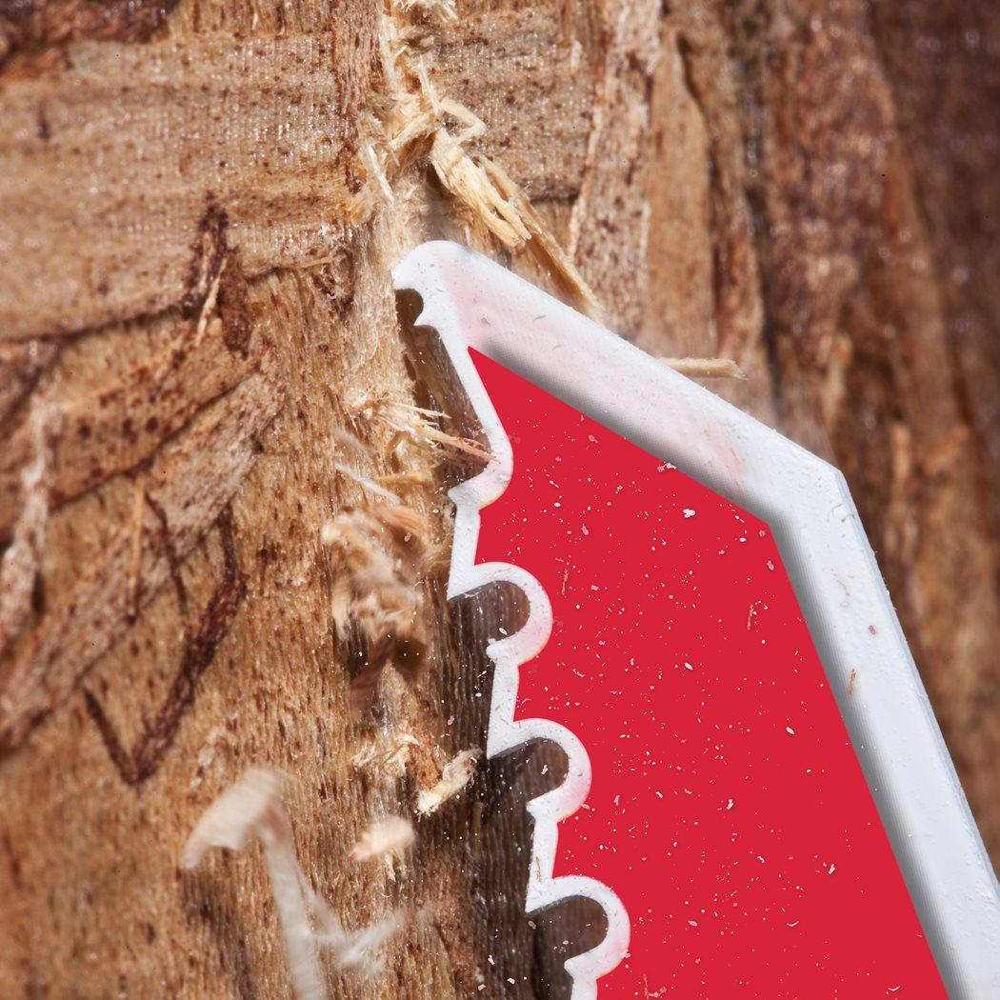
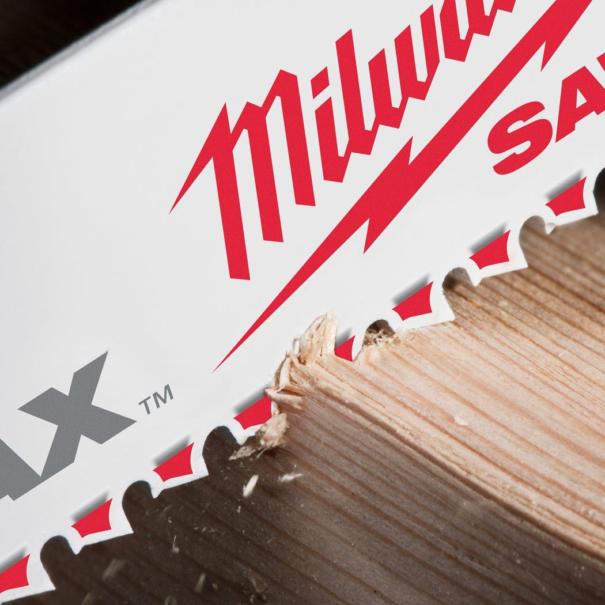
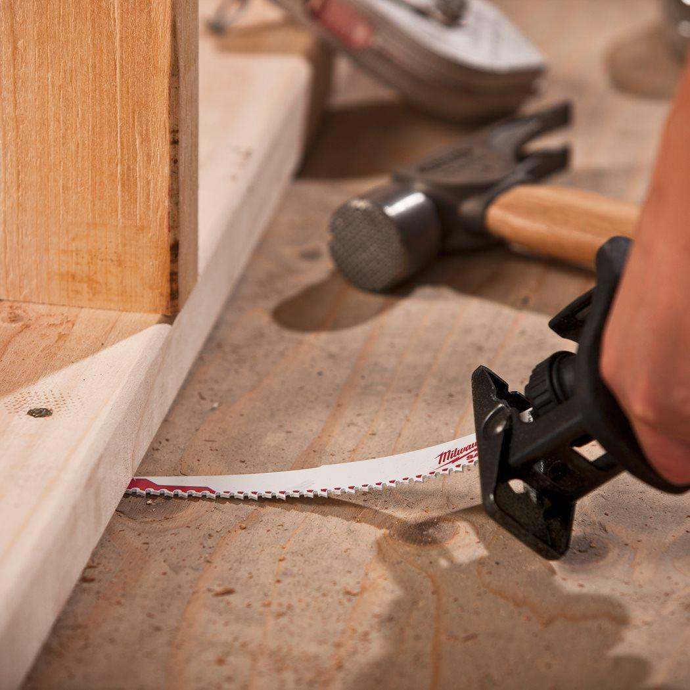
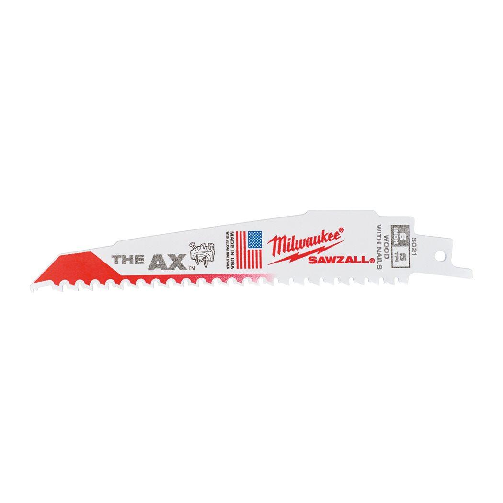

| Blade length (mm) | 150 |
| Materials suited for | Wood with nails & screws|Wood |
| Max. cutting capacity plastic pipes (mm) | ⌀ 10 - 100 |
| Max. cutting capacity wood (mm) | 10 - 100 |
| Max. cutting capacity wood with nails (mm) | 10 - 100 |
| Pack quantity | 5 |
| Plunge cut | Yes |
| Ref. No. | S610VF |
| Rescue | Yes |
| Window cut out | Yes |
| Article Number | 48475021 |
| EAN | 045242368082 |